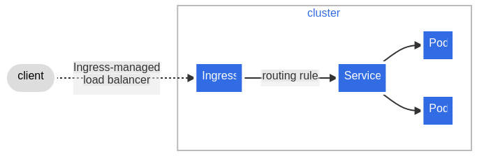

Kubernetes
It is a high-disponiblity platform. It support different application available
to be consume. You can use kubectl (core k8s cli tool) to give instructions to
k8s. Instructions can be imperative and declarative (prefer approach).
Declarative is where k8s take the lead regarding which are the actions needed to
reach the desire state.
Act -> observe -> diff -> Act or Desire vs Actual state
k8s uses reconciliation to make the actual state looks like the desire state via control loop. Or by using imperative actions.
k8s is usually the deployment tool for a microservices architecture, instead of monolithic application.
Concepts
Data is send to k8s through a yaml file, which is a declarative way to describe. Kind is equal to the object being described. Name must unique within the namespace for each Kind.
spec information regarding this object representation.
Create new or update resource with kubectl apply -f <file.yaml>
Pod
Can be reusable. It is a group of containers. It is the smallest unit in k8s. All containers for a pod will run in the same mode. They can talk to each other via localhost, and can share volume resources.
A pod can have a container to run a web server application, where the code is located inside the image. But any time there is typo or a fix, it needs to build a new image and restart the container. This is called main container.
Using side containers, we can have a shared volume between the main container to read the content from, separation od concern isolating and reusing. Each container can have different resources, like memory, cpu, etc.
Services
Load balancing for Pods. Use labels to determine target pods. Like a load balancer in front opf our pods. Service are not process running in k8s, is not consuming resources, is more like configuration or metadata.
Deployments
Deployments are an objects in k8s designed to avoid declaring the exact same pod metadata (except by the name, as it must be unique) when you need to deploy X instance of the same pod.
Deployments does not create actually any pods, Instead, deployment create an object in the middle call replica sets.. Replica sets are used to make it easy to roll from one version of a deployment to another. Each time we update a deployment, a new replica set is created that contains the latest configuration. Replica set actually create the pods.
Two type of strategies:
- RollingUpdate: value by default. new ReplicaSet is created, then scaled up as old one is scaled down.
- Recreate: remove all existing pods in the existing ReplicaSet before creating new ones from new ReplicaSet.
Also, it is possible to configure another different deployment strategies.
In a deployment, each endpoint is the IP address of a pod that is backing that service. In case of multiple replicas, we should see 1 endpoint for each pod created for a deployment.
More configuration available in the official k8s documentation.
StatefulSet
It is an extension of deployment. It is used to manage stateful applications. Name is stable, unique pod identifiers and DNS names. Also, possible to set Persistent Storage and one Persistent Volume per VolumeClaim template. Stick to pod as long as the pod is declared.
Pods created in asc order and deleted in desc order. It is possible to scale up, but all pods must be in Running or Read.
Labels
Characteristics are:
- map of key/value pairs, try to standardize
- both organizational and functional (selector on services)
- indexes and searchable
- avoid compound labels values
Architecture
- Worker nodes, where the containers are running and application. They have cpu, memory to handle the application. Each of the have docker installed and kubelet, which mainly determine the url of the k8s cluster.
- Control planes nodes: host the components that actually run k8s. like API server. Data stored is in etcd. Scheduler, determine where to run the pods. Controller manager, watch the state of the cluster and make changes to the cluster to match the desire state. Cloud controller manager, manage the interaction with the underlying cloud provider.
Networking
Traffic can happen in a cluster within a pod, pod to pod, service to pods and external to cluster.
- within a pod: containers within a pod can connect to each other using localhost. Containers share an IP address accessible throughout the cluster and share common port space.
- pod to pod: each pod has a unique IP address, so they can communicate with each other. IP address are routable anywhere within the cluster. Not common procedure.
- service to pod: service is a resource that provides layer-4 load balancing for a group of pods. Service discovery using the cluster's internal DNS. Types are:
- ClusterIP (virtual IP address that load balance request to backend pods, accessible only in the cluster).
- NodePort: used for external facing service, exposing a port to access externally. K8s will open the port in each worker node.
- external to cluster: service type LoadBalancer, external IP address is provisioned by the cloud provider. Creates and manages an external load balancer, managing traffic across all nodes.
Another option is Ingress. It is a layer-7 load balancer. It is a resource that balance the traffic for one or more services. Ingress rules to balance traffic to specific service. An Ingress may be configured to give Services externally-reachable URLs, load balance traffic, terminate SSL / TLS, and offer name-based virtual hosting. An Ingress controller is responsible for fulfilling the Ingress, usually with a load balancer, though it may also configure your edge router or additional frontends to help handle the traffic. Same rules as Nginx or Traefic can be applied to Ingress, meaning that traffic to a domain or a specific path can be redirect to the corresponding labelled service.

Resource organization
Have multiple clusters, to have highest level of isolation. Each cluster can have different purposes, like security, environments (development vs uat vs production), by geography...
Namespaces are a grouping in k8s. There is no nesting, all our objects in k8s go to same namespace. Namespaces are a way to organize and isolate resources. Names of resources must be unique within a namespace. Security and access can be set per namespaces. Usually 1 namespace per project.
kubeconfig
It a file that contains all sections for k8s.
- clusters: url of the API service. Name can be use later for the kubeconfig file.
- context: where cluster, user and name are glue together. Names are used to identify the context.
- users: credentials to use to access the cluster. Name can be use later for the kubec config file.
Volume
It is a way to persist data. It is a directory that is accessible to containers. Volumes are exposed at pod level. By default, containers in a pod write to ephemeral storage (emptyDir), only available during the pod's lifecycle. Once pod is terminated, data is lost.
But we can attach Persistent volumes to pods which persist any data written to them. They are network attached storage, independent of pod's life. We can static or dynamic volumes. Static volumes are created manually, dynamic volumes are created automatically when a pod is created. Storage is actually outside the cluster.
I your k8s manifest, you will define what are your needs with a Persist Volume Claim. Then, when the request reaches the cluster, it will be matched with a Persist Volume (binding). If there is no match, it will create a new one.
Secrets and dynamic configuration
All runtime configuration should be able to be injected and overrides. Defaults are ok, but we should be able to override them. Secrets are a way to store sensitive information, like passwords, tokens, keys... They are stored in etcd, encrypted at rest. They are base64 encoded, but not encrypted. We can either provide defaults value if no configuration is provided or required configuration, where startup fails if no configuration is provided.
ConfigMap is the object to store configuration. It is a key/value pair. Use to store configuration data and properties. We can load all keys (envFrom.configMapRef) or individual keys (env.valueFrom.configMapKeyRef) as environment variables. Another option is to mount the config map as a mounted volume, similar all keys or individual keys (changes don´t require restart).
For sensitive information, Secret resource stores this kind of data. Must be Base64 encode, and they can be exposed to pod via environment variables or mounted volumes (optional, other secret mechanism system).
Network policies
Specification of how groups of pods are allowed to communicate with each other or other network endpoints. Use of labels to select pods and define rules which specify what traffic is allowed to the selected pods.
By default, traffic is allowed by default. A pod become isolated when defining a network policy that selects them in the namespace. Other pods within the namespace will continue to receive traffic, unless a network policy is defined for them.
Workloads
A Job is a resource that runs to completion, ensure it completes or retries. Based on pod, and job and pod resources will remain so logs, output can be reviewed. Manually clean up actions are required. Possible to create parallel jobs too. Use cases are batch processing, data migration, backups, etc. some process that require large amount of data to process.
Also, another interesting resource is Cronjobs. Schedules one or repeated a specific time or interval. It is based on job, so it is a pod. It is a way to automate recurrent tasks. New Job resources are created for each run. By default, it will clean up Jobs, by default, keeping 3 successful and 1 failed jobs. Jobs should be idempotent.
DaemonSet is a resources that ensures that all nodes run a copy of a pod. Usually used for cluster-wide logging and monitor agents.
Security context
To give a more restrictive access to the pod. It is a way to limit access of the users.
Service account
A service account provides an identity for processes that run in a Pod, and maps to a ServiceAccount object. When you authenticate to the API server, you identify yourself as a particular user. There is a service account by default.
Role-based access control
Once a user is authenticated, we need to authorize the user to perform actions.
a Role is a collection of permissions (rules). Roles are namespace specific. We can assign rules to groups, and users belongs to groups. A more flexible way to assign rules.
With ClusterRole, we can assign rules to cluster-wide resources instead to restrict to a specific namespaces. Totally reusable across entire cluster.
We assign to groups and user with RoleBinding object. It is namespace specific. Get subjects and roles, and bind them together. Similar, but for entire cluster, you have the object ClusterRoleBinding.
There are some built-in roles, such as cluster-admin, admin, view and
edit.
Local k8s cluster
minikube quickly sets up a local Kubernetes cluster on macOS, Linux, and Windows. Easy to install and start working.
Install and run minikube to have a local cluster for k8s in local. If minikube is running, automatically context/namespace is updated to use then one's from minikube. If you are working with other k8s cluster, keep in mind this change. Always double-check for namespace or context before deploying to the cluster. To work with cluster outside local, either you stop minikube or change namespace. Careful, when you stop minikube, context/namespace are set to null, so your kube commands won't be pointing to any context. You need to explicitly set again context.
minikube command is just a proxy of kubectl commands, with a different
command format but doing the same underneath.
Readiness and liveness, startup probes
Kubernetes simply observes the pod's lifecycle and starts to route traffic to the pod when the containers move from the Pending to Succeeded state. That means, Kubernetes mark a pod as healthy and ready to get request as soon as this happens. But application may receive traffic before is actually ready, because it needs to make database connection or load some data. There is a gap between when the app is ready and when Kubernetes thinks is ready. Risk of receive traffic and return 500 errors. Similar case happens when Kubelet watches for application crashes and restarts the pod to recover.
3 different probes:
- Liveness probe, determines the health, and kills the pod if it fails the liveness check (deadlock situation, since the underlying process continues to run from Kubernetes's perspective).
- Readiness probes are used to let kubelet know when the application is ready to accept new traffic. It runs during the pod's entire lifecycle, to deal when the application is temporarily unavailable (wait for it to recover).
- Startup probes are similar to readiness probes but only executed at startup. They are optimized for slow starting containers or applications with unpredictable initialization processes.
3 different probe handlers:
- exec: run a command inside the container. Success if return code is 0.
- TCPSocket: TCP check , success if port is open and accepting connections.
- HTTPGet: invoke HTTP GET against url, success if 2XX or 3XX code.
There are many options in the probe configuration, check in the official k8s documentation.
Resource management
Units in k8s have a different rate conversion, and different units for CPU and Memory (can be either base 2 or 10).
Resource request is the minimum amount of resources that the container needs to work. Helps k8s to schedule the pod in a more efficient way. Only used for scheduling, if the sum of the resource requests less than the capacity of the node.
On the other hand, we have resource limits. It is the maximum amount of resources that a pod can get. If exceed this limits, container might be terminated. It is a way to protect against a runaway app.